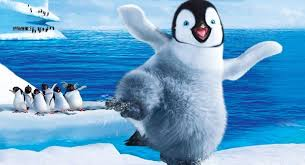
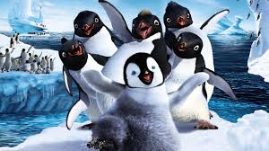
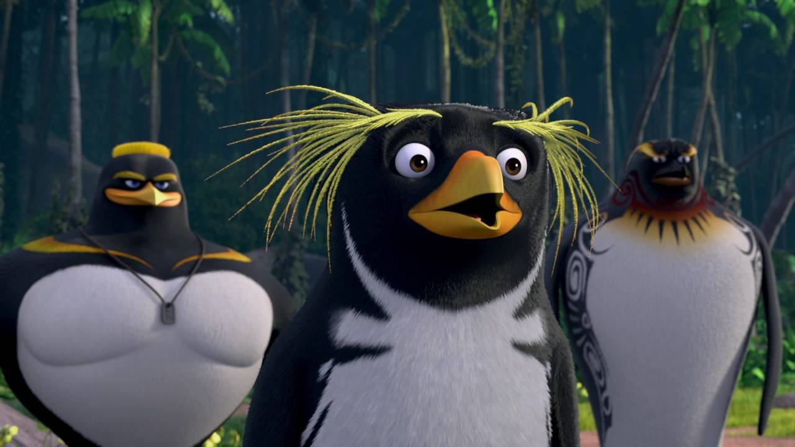
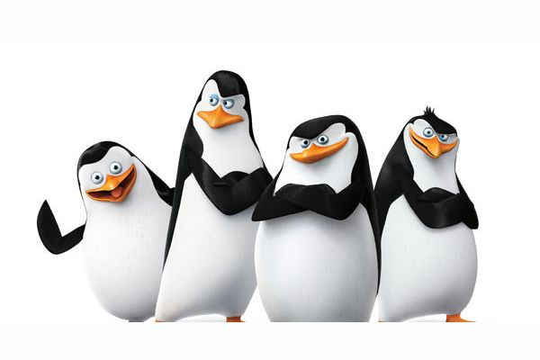

Los Pinguinos
Los pingüinos son aves marinas no voladoras que pertenecen a la familia Spheniscidae. Aunque son aves, no pueden volar porque sus alas están adaptadas para nadar, actuando como aletas rígidas que les permiten desplazarse con rapidez bajo el agua. Son expertos buceadores y pueden llegar a profundidades de hasta 500 metros, como en el caso del pingüino emperador. Su cuerpo aerodinámico, recubierto por plumas densas e impermeables, les ayuda a mantener la temperatura corporal en ambientes extremadamente fríos. Además, una gruesa capa de grasa bajo la piel los protege del agua helada. Aunque muchas personas los relacionan exclusivamente con la Antártida, los pingüinos viven en diferentes regiones del hemisferio sur, desde climas fríos hasta zonas templadas, como las Islas Malvinas, el sur de Sudamérica, Australia, Nueva Zelanda e incluso zonas tropicales como las Islas Galápagos.

Especies, reproduccion y alimentacion
Actualmente se reconocen 18 especies de pingüinos, cada una con adaptaciones únicas a su entorno. El pingüino emperador es el más grande, mientras que el más pequeño es el pingüino azul, que mide solo unos 30 cm. Todos los pingüinos se alimentan de animales marinos, como peces, calamares y krill, que atrapan mientras nadan a gran velocidad. Gracias a su excelente visión bajo el agua, pueden detectar presas con facilidad. Son animales sociales que viven en grandes colonias que a veces incluyen miles de individuos, lo que les ofrece protección y cooperación. Durante la temporada de cría, tanto el macho como la hembra se turnan para incubar el huevo y cuidar al polluelo, lo cual demuestra una gran estrategia de supervivencia. Además, los polluelos tienen un plumón especial que los mantiene abrigados hasta que desarrollan plumas impermeables.
En estas especies no estan los Pinguinos de Madagascar
¿Que amenazas enfrentan los pinguinos?
Lamentablemente, muchos pingüinos enfrentan amenazas que ponen en riesgo su supervivencia. El cambio climático es una de las causas principales, ya que altera los patrones del hielo, reduce la disponibilidad de alimento y modifica las rutas migratorias. La contaminación de los océanos, como los derrames de petróleo y el plástico, afecta directamente su salud y la de sus crías. También sufren por la pesca industrial, que compite con ellos por los recursos del mar, y por la destrucción de sus zonas de anidación debido a la actividad humana. Algunas especies, como el pingüino de ojos amarillos y el pingüino africano, ya están en peligro de extinción. Organizaciones científicas y conservacionistas trabajan en programas para proteger sus hábitats, monitorear sus poblaciones y educar sobre su importancia ecológica.
Factores como el calentamiento global, la contaminacion del mar el derretimiento de polos y demas factores provocan que los pinguinos poco a poco se vayan extinguiendo y haciendo que su poblacion disminya en tan poco tiempo
Comportamientos e interacciones
Además de su impresionante resistencia al frío y su habilidad para nadar largas distancias, los pingüinos también presentan comportamientos únicos que los hacen aún más interesantes. Caminan juntos en grupos cerrados para conservar el calor, especialmente durante tormentas de nieve. Algunas especies construyen nidos con piedras, plumas o vegetación, y en ciertos casos, los machos ofrecen piedras a las hembras como parte del cortejo, como ocurre con los pingüinos de Adelia. Son animales que muestran una notable fidelidad, ya que muchas parejas se reencuentran cada año en el mismo lugar de anidación, reconociéndose por medio de sonidos específicos. También tienen una estructura social compleja, con comunicación vocal y gestual para organizarse dentro de la colonia. Estos rasgos han despertado gran interés en los científicos y los han convertido en símbolos de unidad, resiliencia y adaptación.
